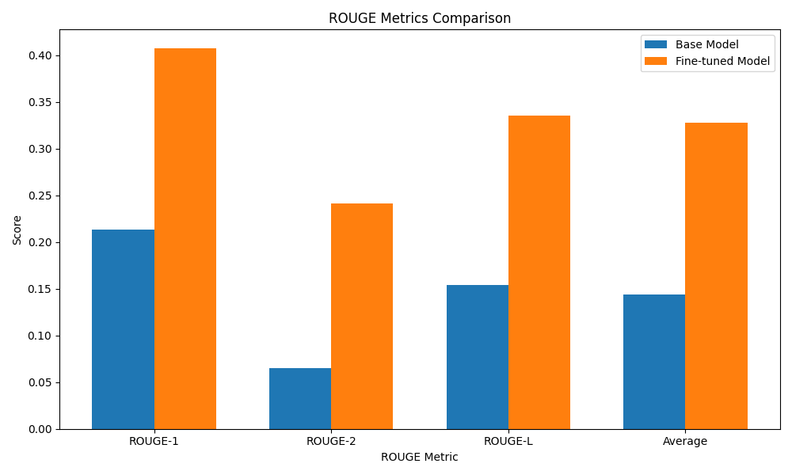
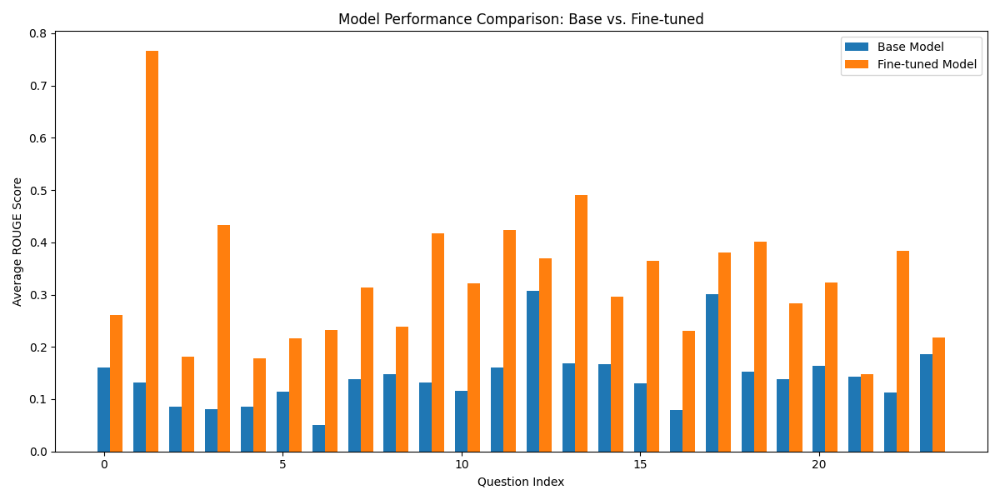

Generated on 2025-04-18 10:35:37
Base Model Average ROUGE Score: 0.1440
Fine-tuned Model Average ROUGE Score: 0.3280
Improvement: 0.1840 (127.79%)
| Metric | Base Model | Fine-tuned Model | Improvement |
|---|---|---|---|
| ROUGE-1 | 0.2131 | 0.4072 | 0.1941 (91.13%) |
| ROUGE-2 | 0.0650 | 0.2410 | 0.1760 (270.92%) |
| ROUGE-L | 0.1540 | 0.3358 | 0.1819 (118.12%) |
| Average | 0.1440 | 0.3280 | 0.1840 (127.79%) |


| Question | Base Score | Fine-tuned Score | Improvement | Improvement % |
|---|---|---|---|---|
| How many workers are part of the garbage collection and cleaning service in Olot? | 0.161076 | 0.260582 | 0.099506 | 61.775643 |
| How many shifts is the working day divided into? | 0.131214 | 0.765850 | 0.634636 | 483.665777 |
| How many waste collection routes are established? | 0.086022 | 0.181763 | 0.095742 | 111.299819 |
| How many workers are assigned per route? | 0.080808 | 0.433692 | 0.352884 | 436.693548 |
| What is the general condition of the collection trucks? | 0.085470 | 0.178091 | 0.092621 | 108.366935 |
| How many liters of diesel are consumed monthly? | 0.114532 | 0.216687 | 0.102155 | 89.192956 |
| What is the percentage of men and women working in the service? | 0.051027 | 0.231527 | 0.180500 | 353.733792 |
| Who is responsible for managing waste collection and cleaning in Olot? | 0.137737 | 0.313978 | 0.176242 | 127.955390 |
| What type of collection system is used? Is it door-to-door or another model? | 0.147486 | 0.238028 | 0.090542 | 61.390372 |
| How many tons of residual waste are collected monthly? | 0.131819 | 0.417614 | 0.285794 | 216.807391 |
| How many tons of packaging waste are collected monthly? | 0.115405 | 0.321148 | 0.205743 | 178.279344 |
| How many tons of organic waste are collected monthly? | 0.160734 | 0.422939 | 0.262205 | 163.129428 |
| On which days of the week do the workers operate? | 0.306983 | 0.370115 | 0.063132 | 20.565340 |
| What are the most common issues with the collection trucks? | 0.169270 | 0.490490 | 0.321221 | 189.768679 |
| How many trips are made to the landfill each week? | 0.167133 | 0.295900 | 0.128768 | 77.045222 |
| Which areas in Olot generate the most waste? | 0.130435 | 0.365150 | 0.234715 | 179.948459 |
| What types of waste containers exist in Olot, and how are they distributed? | 0.080000 | 0.229972 | 0.149972 | 187.464986 |
| How is the collection of bulky waste and old furniture managed in Olot? | 0.300651 | 0.380726 | 0.080075 | 26.633997 |
| What is the recycling rate in Olot? | 0.152775 | 0.401434 | 0.248658 | 162.760525 |
| Are there penalties for not recycling correctly in Olot? | 0.138618 | 0.282598 | 0.143981 | 103.868632 |
| How is street cleaning carried out in Olot, and how frequently? | 0.164341 | 0.323837 | 0.159496 | 97.051551 |
| Which company is responsible for maintaining and repairing the collection trucks? | 0.143421 | 0.148413 | 0.004992 | 3.480554 |
| How does tourism affect waste generation in Olot? | 0.112376 | 0.383754 | 0.271377 | 241.489900 |
| What campaigns have been implemented in Olot to improve selective waste collection? | 0.186610 | 0.217917 | 0.031308 | 16.777035 |
Base Model: meta-llama/Llama-3.2-1B-Instruct
Fine-tuning Method: LoRA (Low-Rank Adaptation)
Evaluation Metric: ROUGE (Recall-Oriented Understudy for Gisting Evaluation)